library(DataExplorer)# data overview plot_intro(marketing)
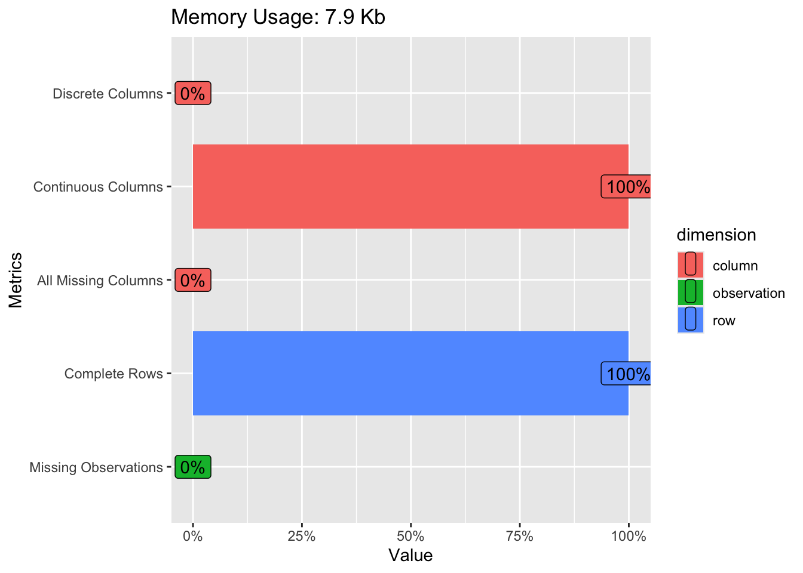
plot_missing(marketing)
Warning: `aes_string()` was deprecated in ggplot2 3.0.0.
ℹ Please use tidy evaluation idioms with `aes()`.
ℹ See also `vignette("ggplot2-in-packages")` for more information.
ℹ The deprecated feature was likely used in the DataExplorer package.
Please report the issue at
<https://github.com/boxuancui/DataExplorer/issues>.
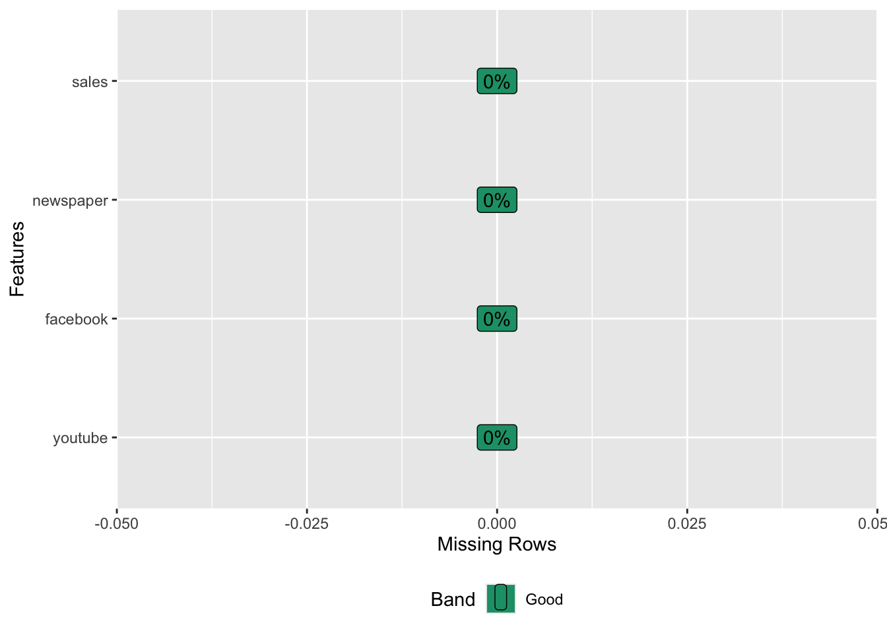
# different graphs to understand dataplot_scatterplot(marketing, by ="sales")
plot_correlation(marketing)# in this case we are using dataexplorer
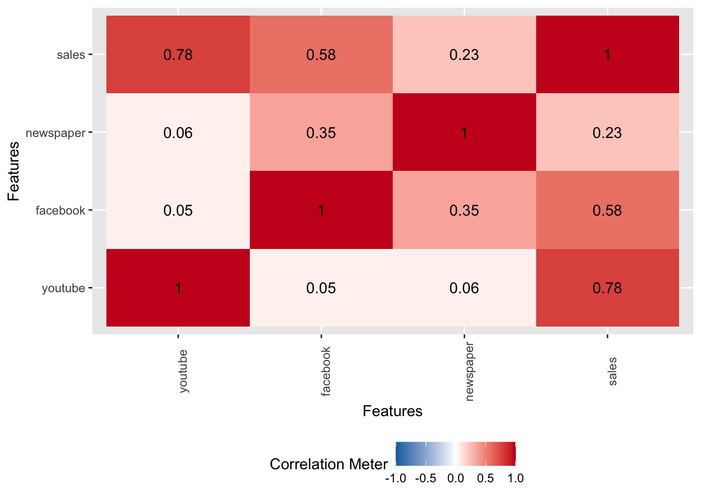
Modelling data
model <-lm(sales ~ ., data = marketing)summary(model)
Call:
lm(formula = sales ~ ., data = marketing)
Residuals:
Min 1Q Median 3Q Max
-10.5932 -1.0690 0.2902 1.4272 3.3951
Coefficients:
Estimate Std. Error t value Pr(>|t|)
(Intercept) 3.526667 0.374290 9.422 <2e-16 ***
youtube 0.045765 0.001395 32.809 <2e-16 ***
facebook 0.188530 0.008611 21.893 <2e-16 ***
newspaper -0.001037 0.005871 -0.177 0.86
---
Signif. codes: 0 '***' 0.001 '**' 0.01 '*' 0.05 '.' 0.1 ' ' 1
Residual standard error: 2.023 on 196 degrees of freedom
Multiple R-squared: 0.8972, Adjusted R-squared: 0.8956
F-statistic: 570.3 on 3 and 196 DF, p-value: < 2.2e-16
For a fixed amount of youtube and newspaper budget, spending 1 more dollar on facebook ads leads to an increase in sales of 0.186 sales units on average.
Testing multicollinearity in the model
omcdiag function Computes different overall measures of multicollinearity diagnostics for matrix of regressors
library(mctest)omcdiag(model)
Call:
omcdiag(mod = model)
Overall Multicollinearity Diagnostics
MC Results detection
Determinant |X'X|: 0.8706 0
Farrar Chi-Square: 27.3227 1
Red Indicator: 0.2094 0
Sum of Lambda Inverse: 3.2948 0
Theil's Method: -1.5365 0
Condition Number: 5.7058 0
1 --> COLLINEARITY is detected by the test
0 --> COLLINEARITY is not detected by the test
imcdiag function computes different measures of multicollinearity diagnostics for each regressor
imcdiag(model)
Call:
imcdiag(mod = model)
All Individual Multicollinearity Diagnostics Result
VIF TOL Wi Fi Leamer CVIF Klein IND1 IND2
youtube 1.0046 0.9954 0.4542 0.9129 0.9977 25.9975 0 0.0101 0.0534
facebook 1.1450 0.8734 14.2778 28.7005 0.9346 29.6293 0 0.0089 1.4723
newspaper 1.1452 0.8732 14.3010 28.7471 0.9345 29.6354 0 0.0089 1.4744
1 --> COLLINEARITY is detected by the test
0 --> COLLINEARITY is not detected by the test
newspaper , coefficient(s) are non-significant may be due to multicollinearity
R-square of y on all x: 0.8972
* use method argument to check which regressors may be the reason of collinearity
===================================
It does not seem there is a multicollinearity problem in this data.
Testing linearity
plot(model, 1)
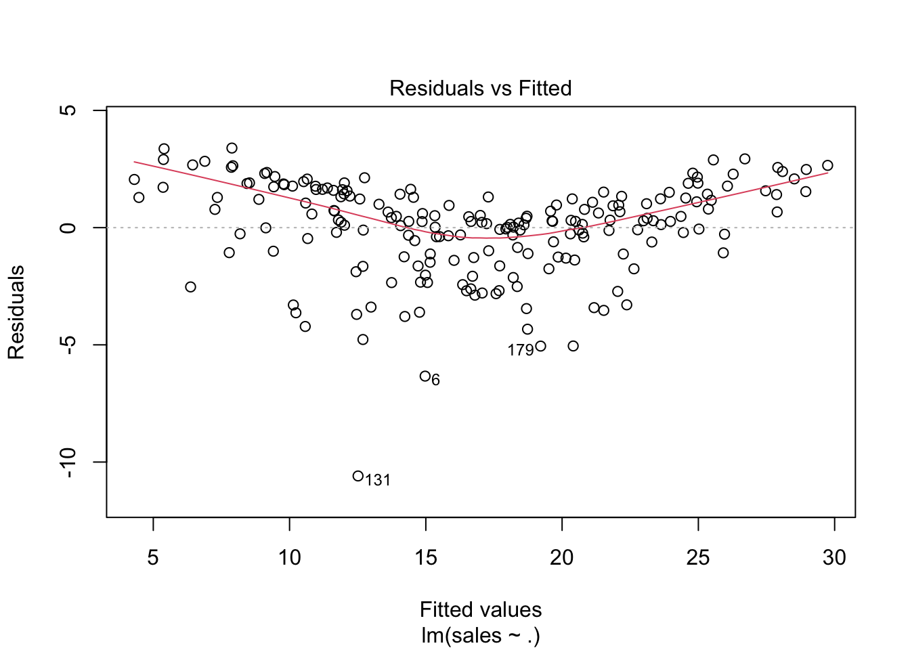
A random scatter of points around the horizontal axis suggests linearity. A pattern (e.g., curves or systematic deviations) indicates potential non-linearity.
Testing normality of residuals
# Normality of residualsplot(model, 2)
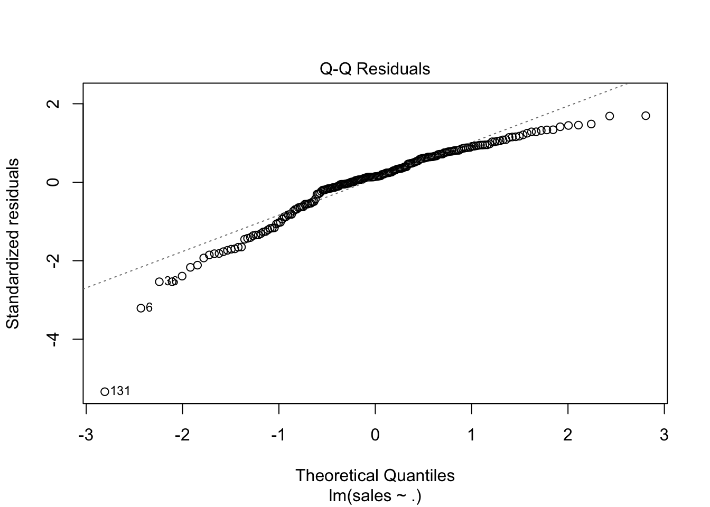
Saphiro Wilk test Ho: data is normally distributed
shapiro.test(model$residuals)
Shapiro-Wilk normality test
data: model$residuals
W = 0.91767, p-value = 3.939e-09
P-value: In conventional hypothesis testing, a p-value less than 0.05 is considered evidence against the null hypothesis.Thus, seems that residuals are not normally distributed.
Testing homoscedasticity
plot(marketing$sales,model$fitted.values)
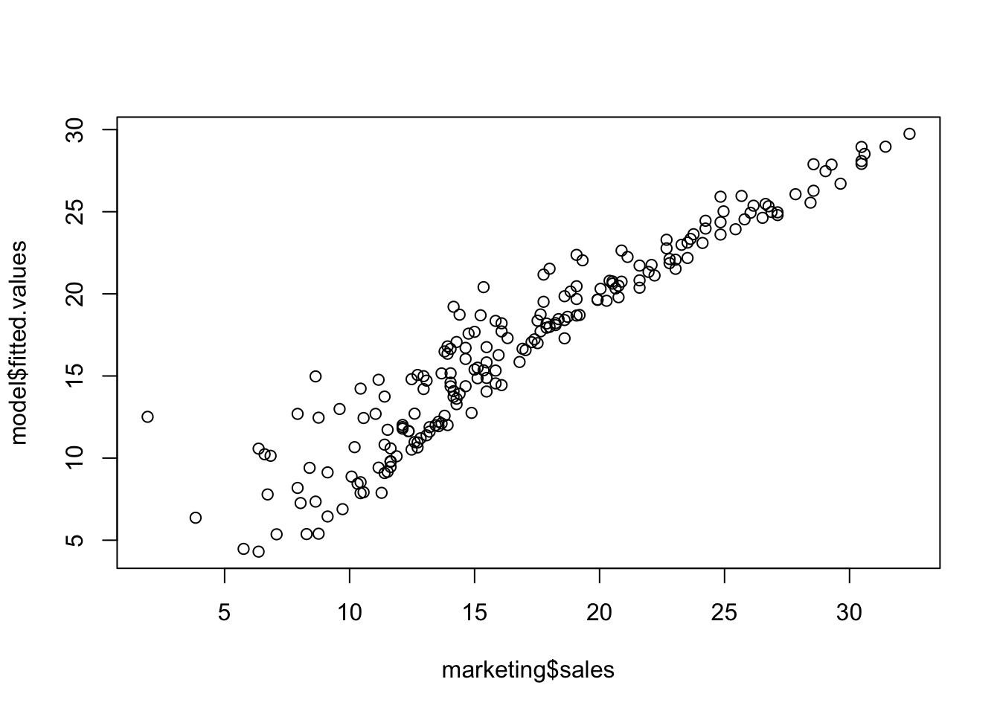
plot(model, 3)
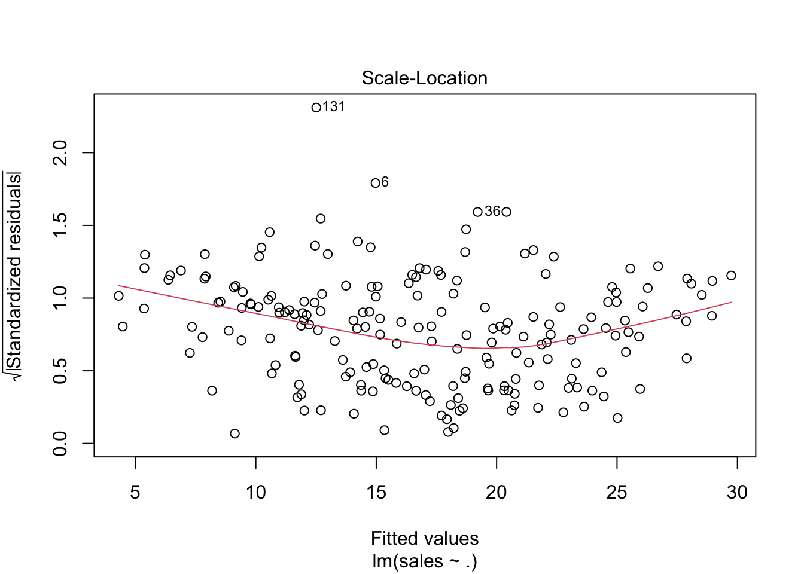
library(car)
Loading required package: carData
Attaching package: 'car'
The following object is masked from 'package:dplyr':
recode
The following object is masked from 'package:purrr':
some
ncvTest(model)
Non-constant Variance Score Test
Variance formula: ~ fitted.values
Chisquare = 5.355982, Df = 1, p = 0.020651
Given the small p-value, you would reject the null hypothesis of homoscedasticity. This means there is statistically significant evidence of heteroscedasticity in model’s residuals – the variance of the residuals is not constant across the range of fitted values.
Testing independence assumption
Durbin-Watson test Ho: autocorrelation = 0 (there is no autocorrelation)
durbinWatsonTest(model)
lag Autocorrelation D-W Statistic p-value
1 -0.04687792 2.083648 0.558
Alternative hypothesis: rho != 0
The Durbin-Watson p-value larger than 0.05 suggests that there isn’t a strong autocorrelation in residuals
PART 2 ——
Expand data - feature generation. Multiple and do quadratics of the existing data.
Scaling When we have explanatory variables with very different magnitudes, those with larger ranges can dominate those with smaller ranges in some ML algorithms, skewing results and leading to poor model performance.
In the case of the linear model:
Without scaling, coefficients reflect both the feature’s relationship with the target and the scale of the feature itself, making it challenging to compare their importance.
After scaling, coefficients reflect each feature’s relative impact on target independently of its original magnitude, so we can compare them to get an idea of their importance – but we cannot interpret coefficients as usual.
# separate target and explanatory varssales <- marketing2$salesexp_vars <- marketing2 |> dplyr::select(-sales)exp_vars_scaled <-as.data.frame(scale(exp_vars))# put all back togetherdf <-cbind(sales, exp_vars_scaled)
Matrix correlation (all vars)
library(DataExplorer)plot_correlation(df)
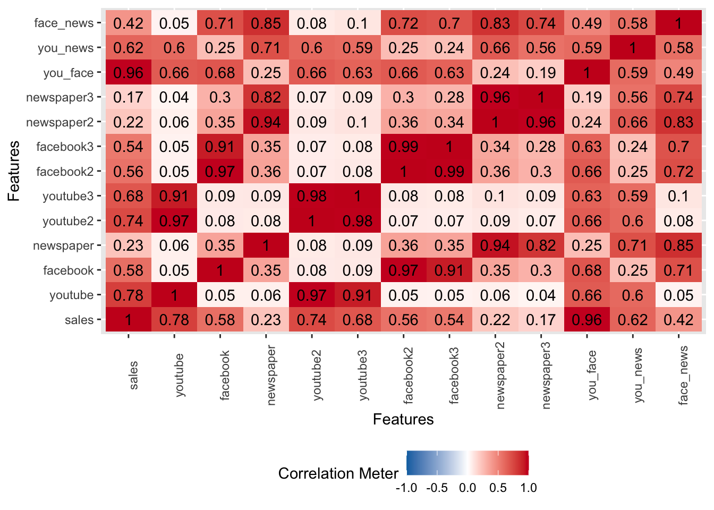
Notice that sales is highly correlated with youtube and all its interactions and transformations.
We can see that interaction term coefficients for you_face and you_news are significant, suggesting that there is an interaction relationship between them.
Testing multicollinearity in the model
omcdiag function Computes different overall measures of multicollinearity diagnostics for matrix of regressors
library(mctest)omcdiag(model)
Call:
omcdiag(mod = model)
Overall Multicollinearity Diagnostics
MC Results detection
Determinant |X'X|: 0.0000 1
Farrar Chi-Square: 5666.9000 1
Red Indicator: 0.5323 1
Sum of Lambda Inverse: 2070.0898 1
Theil's Method: 0.6898 1
Condition Number: 72.8183 1
1 --> COLLINEARITY is detected by the test
0 --> COLLINEARITY is not detected by the test
imcdiag function computes different measures of multicollinearity diagnostics for each regressor
imcdiag(model)
Call:
imcdiag(mod = model)
All Individual Multicollinearity Diagnostics Result
VIF TOL Wi Fi Leamer CVIF Klein IND1
youtube 106.5501 0.0094 1803.9471 1994.8968 0.0969 -0.2851 0 0.0005
facebook 99.7249 0.0100 1687.2978 1865.9000 0.1001 -0.2668 0 0.0006
newspaper 45.7873 0.0218 765.4557 846.4800 0.1478 -0.1225 0 0.0013
youtube2 542.4396 0.0018 9253.6955 10233.2090 0.0429 -1.4512 1 0.0001
youtube3 206.1347 0.0049 3505.9382 3877.0454 0.0697 -0.5515 1 0.0003
facebook2 553.9654 0.0018 9450.6818 10451.0465 0.0425 -1.4820 1 0.0001
facebook3 216.1299 0.0046 3676.7661 4065.9556 0.0680 -0.5782 1 0.0003
newspaper2 199.7364 0.0050 3396.5851 3756.1172 0.0708 -0.5344 1 0.0003
newspaper3 70.3060 0.0142 1184.5019 1309.8827 0.1193 -0.1881 0 0.0008
you_face 8.5406 0.1171 128.8765 142.5182 0.3422 -0.0228 0 0.0069
you_news 7.1907 0.1391 105.8049 117.0044 0.3729 -0.0192 0 0.0081
face_news 13.5842 0.0736 215.0747 237.8405 0.2713 -0.0363 0 0.0043
IND2
youtube 1.0251
facebook 1.0244
newspaper 1.0122
youtube2 1.0329
youtube3 1.0298
facebook2 1.0329
facebook3 1.0300
newspaper2 1.0296
newspaper3 1.0201
you_face 0.9136
you_news 0.8909
face_news 0.9586
1 --> COLLINEARITY is detected by the test
0 --> COLLINEARITY is not detected by the test
facebook , newspaper , facebook2 , facebook3 , newspaper2 , newspaper3 , face_news , coefficient(s) are non-significant may be due to multicollinearity
R-square of y on all x: 0.9915
* use method argument to check which regressors may be the reason of collinearity
===================================
As we included many variables created from original ones, we have multicollinearity
Testing linearity
plot(model, 1)
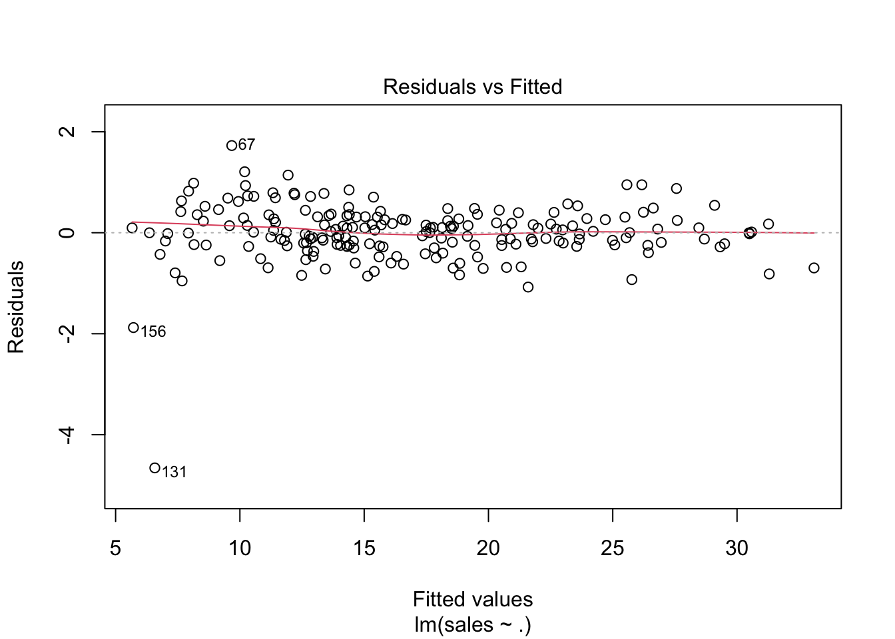
A random scatter of points around the horizontal axis suggests linearity, which is what we can see here. Adding transformed predictors improved linearity as we are better capturing the relationship between the target and explanatory vars (the relationship between sales and youtube is probably non-linear)
Testing normality of residuals
# Normality of residualsplot(model, 2)
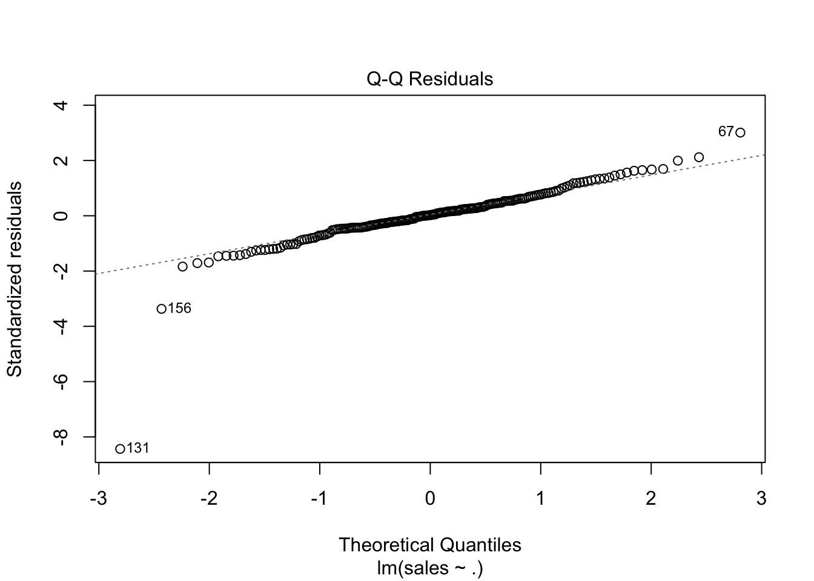
Saphiro Wilk test Ho: data is normally distributed
shapiro.test(model$residuals)
Shapiro-Wilk normality test
data: model$residuals
W = 0.83229, p-value = 6.413e-14
Even though the plot looks good, there are a few outliers in the distribution. The p-value is near 0, so we reject the null hyphotesis (normality)
Testing homoscedasticity
plot(marketing$sales,model$fitted.values)
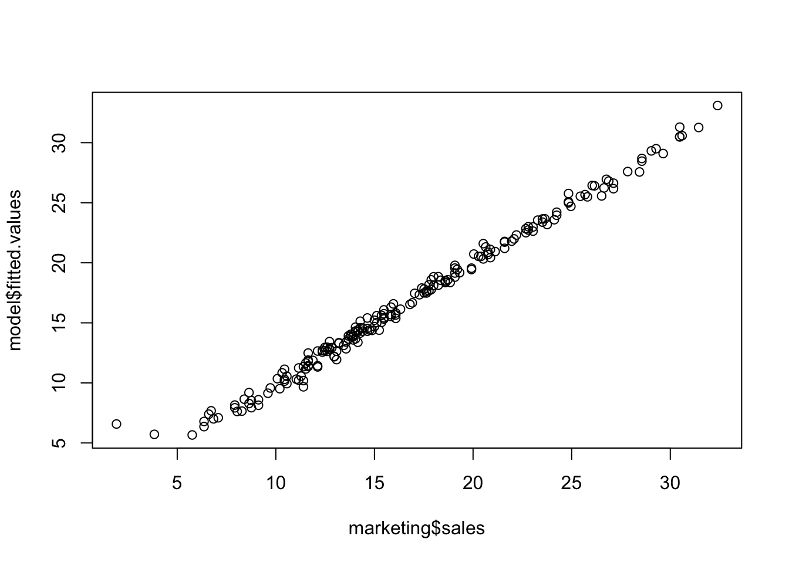
This looks like a funnel, wider at the left side of the graph.
plot(model, 3)
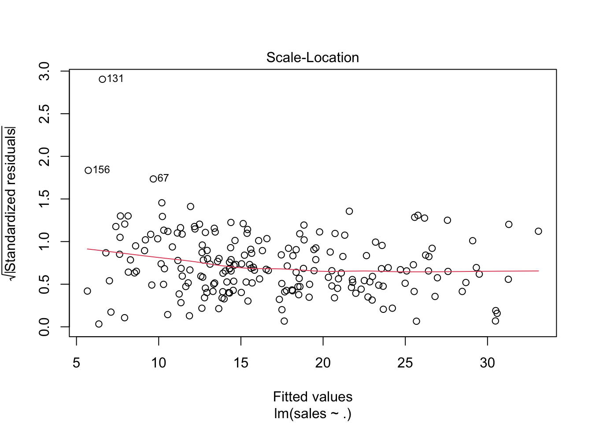
library(car)ncvTest(model)
Non-constant Variance Score Test
Variance formula: ~ fitted.values
Chisquare = 58.46533, Df = 1, p = 2.069e-14
Homoskedasticity plots have improved too, but the ncv test p-value is almost 0 so we reject homoscedasticity (again, probably because of outliers). Up until now we have not met any of the assumptions.
Testing independence assumption
Durbin-Watson test Ho: autocorrelation = 0 (there is no autocorrelation)
durbinWatsonTest(model)
lag Autocorrelation D-W Statistic p-value
1 -0.09474419 2.174808 0.192
Alternative hypothesis: rho != 0
The Durbin-Watson p-value larger than 0.05 suggests that there isn’t a strong autocorrelation in residuals (same than in Exercise 1). We don’t have auto-correlation among our observations.
rho is how they are expressing the auto-correlation matrix.
Check outliers and influential points
# Cook's distanceplot(model,4)
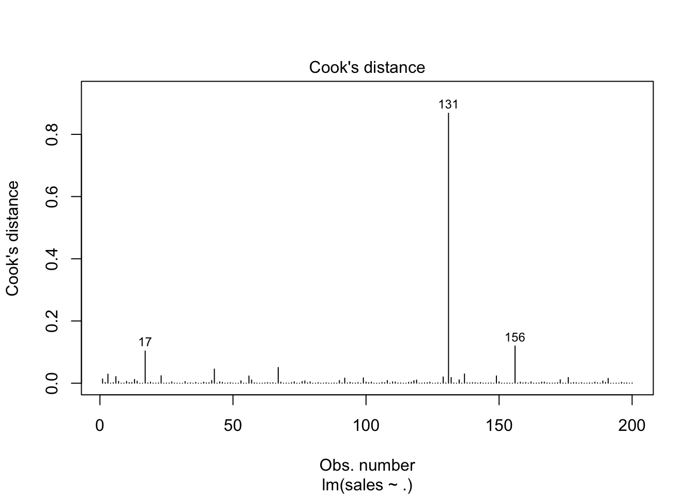
We see a large extreme value (131)
Observation 131 is probably an influential point as it is very close to the cook’s distance equal 1 outer dashed line)
Overall, we have improved our LM by improving new variables which capture non-linear relationships!